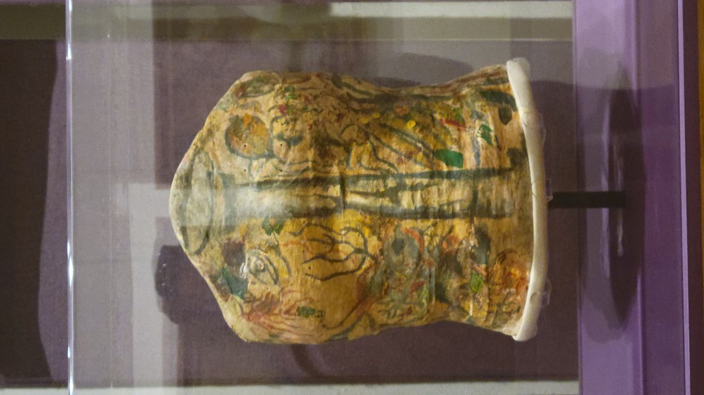
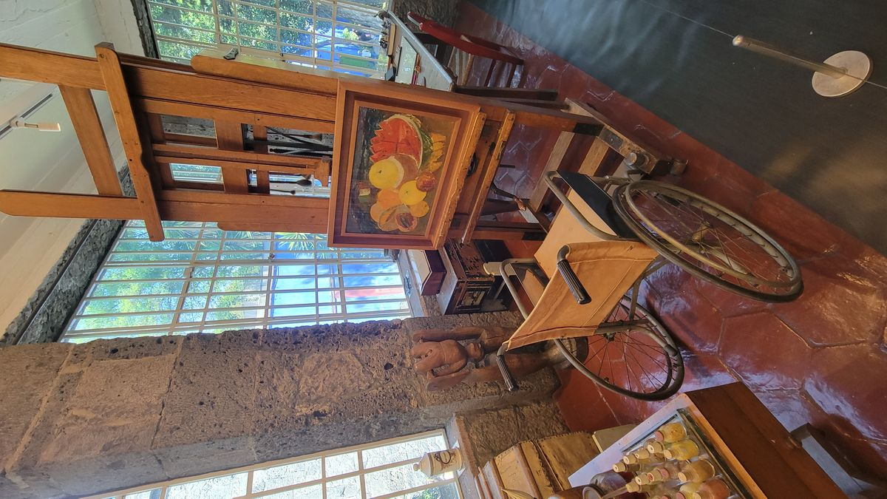
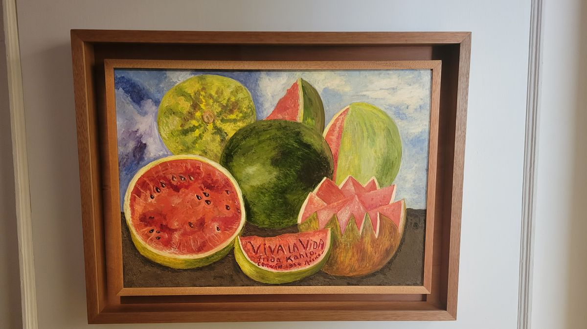
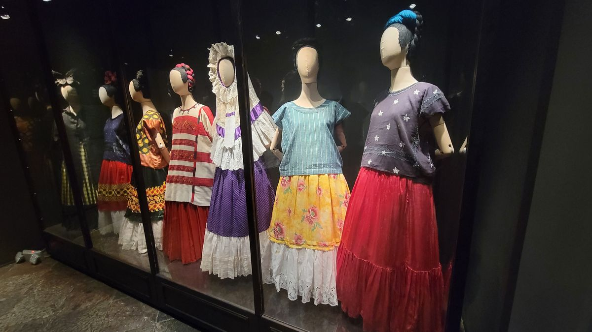
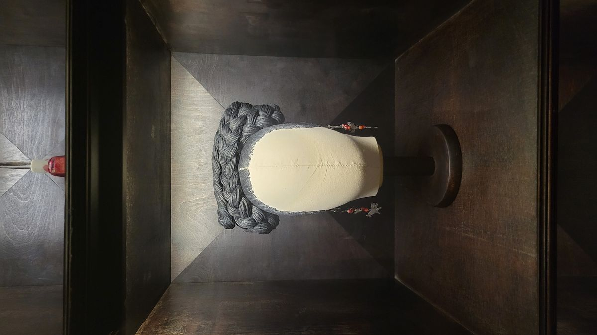

México City - Casa Azul
One of México’s most well knows Artists is Frida Kahlo. Born in Coyoacán, a suburb of México City, to a Méxican mother and German father, her mestizo upbringing and childhood marred by disease and injury is what would influence her art and ultimately her legacy.
She contracted Polio at age 6 which left her with a noticeably deformed right leg and a limp. At 18, while pursuing an education in medicine, the trolley she was on was in an accident. The handrail impaled her pelvis, leaving her in a lifetime of chronic pain. It was during her recovery that she picked up the paintbrush and used the media as a form of therapy and self-expression. She painted in the midst in intense physical pain, drawing upon her Mexican heritage, her works are filled with Mexican symbology and mythology. Her art is known for its raw honesty and intense emotion.


The Casa Azul, or Blue House is Mexico’s 2nd most visited museum. Frida’s childhood home and residence until her death has been turned into a shrine to her legacy. Entering through the front doors, the cobalt blue walls are lined with her personal effects and works. Her studio, left as it was at her death, still has an unfinished work on the easel.

Her tumultuous marriage, divorce and remarriage one year later, to the muralist Diego Rivera is depicted in her works. Diego was a large man, and Frida’s use of bold colors and large-scale imagery are thought to be references to her husband. Together, they were a major force in creating Mexico’s post revolution identity.
Through the Casa Azul museum, Frida’s legacy lives on encouraging us to embrace life’s challenges with courage and creativity.



If you want to visit Casa Azul, its best to plan far in advance. The musuem has changed little since it was a residence. The spaces are small and entrance is strictly regulated. Tickets are sold out weeks in advance. Don't do like I did and wait until 2 days before and be forced to book a much more expensive tour with skip the line access. While exploring Frida's hometown on bicycle, sampling churros and learning about the history of Coyacoán, with fellow tourists and a knowledgable guide provided much welcomed context, the $80 tour, vs $15 entrance is a large gap in prices.